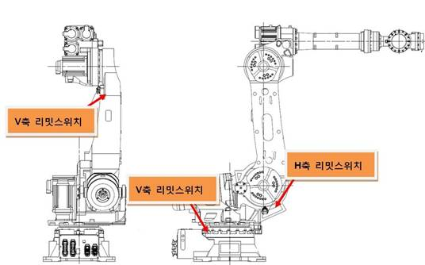
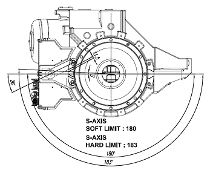
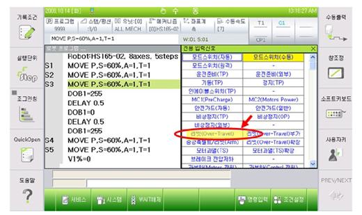
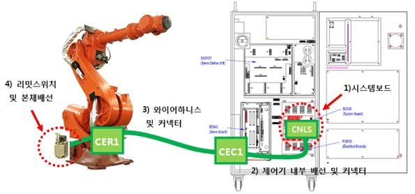
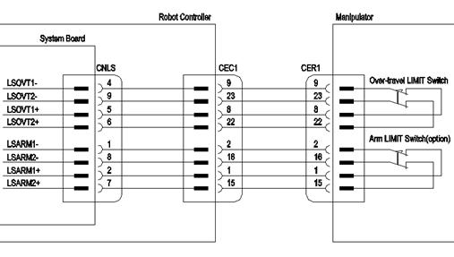
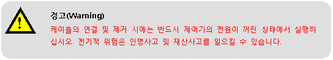
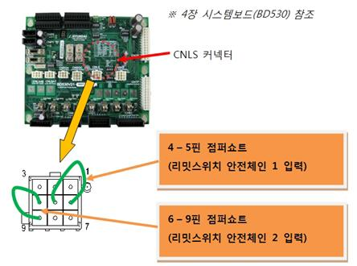
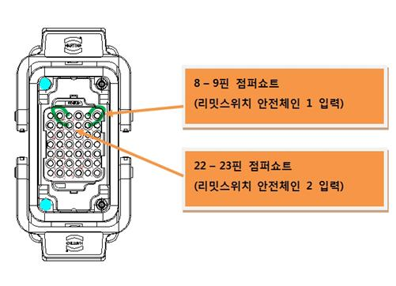
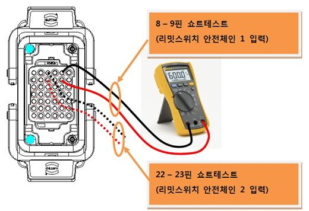

개 요
로봇 각 축의 동작영역 끝에 설치한 리밋스위치가 작동하였습니다. 안전을 위하여 로봇은 즉각적으로 정지하며 적절한 방법으로 안전한 동작영역으로 이동할 때까지는 정상적인 운전을 할 수 없습니다.
원인 및 점검방법
|
1. 실제로 동작영역을 이탈한 것인지 확인하십시오. █ 동작영역 이탈시의 복구방법
2. 동작영역 이탈이 아님에도 불구하고 에러가 발생하는 경우 █ 시스템보드 커넥터(CNLS)에서 점검하는 방법 █ 와이어 하니스(CER1 또는 CEC1)에서 점검하는 방법 █ 리밋스위치 및 본체 내부 배선을 점검하는 방법 |
1. 실제로 동작영역을 이탈한 것인지 확인하십시오.
실제로 로봇이 동작영역 밖으로 벗어났는지 확인하십시오. 소프트리밋 에러도 동시에 발생하였다면 로봇은 동작영역을 이탈한 것입니다. 적절한 조작으로 로봇을 동작영역 안으로 이동시키십시오. 동작영역은 로봇 모델에 따라 다릅니다. 따라서 리밋스위치의 설치위치도 다를 수 있으므로 해당 로봇의 보수설명서에서 “동작범위 제한” 부분을 참조하십시오.

< HS165/HS200 로봇의 하드웨어 리밋스위치 설치 위치 >

< HS165/HS200 로봇의 S축 리밋스위치 작동범위 >
█ 동작영역 이탈시의 복구방법
하드웨어 리밋스위치가 걸려있는 상태에서 로봇을 움직이기 위해서는 다음과 같은 조건과 순서로 실행하십시오. 우선 수동모드에서 시스템로 진입하고 티칭펜던트의 인에이블링스위치를 잡습니다.
이 상태에서 모터ON을 실행하고 조그키를 사용하여 로봇을 동작영역 안으로 이동시킵니다.
2. 동작영역 이탈이 아님에도 불구하고 에러가 발생하는 경우
우선 티칭펜던트의 전용 입력신호 창에서 리밋(Over-Travel) 항목이 계속 입력되고 있는지를 확인합니다. 이 창은 서비스 à 1:모니터링 à 2:입출력신호 à 1:전용 입력신호를 선택하면 볼 수 있습니다. 리밋(Over-Travel) 항목이 황색표시가 되어 있으면 에러상태를 나타냅니다.
☞ 주의 : 수동모드에서는 티칭펜던트의 인에이블링 스위치를 ON시켜야 모니터링이 됩니다. 자동모드에서는 인에이블링 스위치 상태와 관계없이 모니터링 됩니다.

<전용신호 입력창에서 리밋(Over-Travel) 모니터링 표시>
이와 같은 경우는 리밋스위치와 관계된 구성품들에서 원인을 찾을 수 있습니다. 리밋스위치는 다음 그림과 같이 본체로부터 CER1 – CEC1 케이블을 통하여 제어기의 시스템보드에 연결됩니다.


<리밋스위치 상태 입력과 관련된 배선 >
주요 점검포인트와 순서는
1) 시스템보드
2) 제어기 내부의 배선 및 커넥터
3) 와이어하니스 및 커넥터
4) 리밋스위치 및 본체배선
이며, 적절한 부위에서 리밋스위치의 입력선을 점퍼하여 모니터링 창에서 리밋(Over-Travel) 항목이 백색으로 변화하는지를 확인해야 합니다.
다음의 순서에 따라 진행하십시오.
█ 시스템보드 커넥터(CNLS)에서 점검하는 방법

시스템보드의 CNLS커넥터를 통해서 보드의 고장인지를 판단하는 것입니다. 아래의 그림과 같이 CNLS커넥터에서 리밋스위치 입력과 관련된 핀을 점퍼쇼트 하십시오. 이 상태에서 전용입력신호 모니터링 창을 통하여 리밋(Over-Travel) 항목을 확인하십시오.
1) 백색으로 바뀌었다면, 시스템보드의 고장입니다. 보드를 교체하십시오.
2) 황색으로 여전히 에러상태라면,
보드 이후 본체 리밋스위치까지의 영역에서 고장을 체크하십시오.

█ 와이어 하니스(CER1 또는 CEC1)에서 점검하는 방법
와이어하니스 커넥터 CER1 또는 CEC1를 통해서 케이블 고장인지를 판단하는 것입니다. 우선 제어기로부터 CEC1 와이어하니스를 제거한 후, 제어기에 부착되어 있는 CEC1 커넥터에서 리밋스위치 관련 핀을 점퍼쇼트하십시오. 이 상태에서 전용입력신호 모니터링 창을 통하여 리밋(Over-Travel) 항목을 확인하십시오.
1) 백색으로 바뀌었다면,
제어기 내부의 CEC1커넥터-시스템보드 간 케이블 또는 커넥터의 고장입니다. 이를 점검하거나 교체하십시오.
2) 황색으로 여전히 에러상태라면,
CEC1커넥터 이후 본체 리밋스위치까지의 영역에서 고장을 체크하십시오.
CEC1 와이어하니스를 다시 연결하고 본체로부터 CER1 와이어하니스를 제거한 후, 와이어하니스의 CER1커넥터에서 리밋스위치 관련 핀을 점퍼쇼트하십시오. 이 상태에서 전용입력신호 모니터링 창을 통하여 리밋(Over-Travel) 항목의 상태를 확인하십시오.
1) 백색으로 바뀌었다면,
CER1커넥터-CEC1커넥터 간 와이어하니스 케이블 또는 커넥터의 고장입니다. 이를 점검하거나 교체하십시오.
2) 황색으로 여전히 에러상태라면,
본체 쪽 CER1커넥터 이후 리밋스위치까지의 영역에서 고장을 체크하십시오.

█ 리밋스위치 및 본체 내부 배선을 점검하는 방법
본체로부터 CER1 와이어하니스를 제거한 후, 본체의 CER1커넥터에서 리밋스위치 관련 라인에 이상이 있는지 멀티미터를 사용하여 쇼트테스트하십시오.
1) 저항이 오픈상태로 측정되었다면,
리밋스위치 또는 리밋스위치-CER1 간 커넥터 또는 커넥터의 고장입니다.
이를 점검하거나 교체하십시오.
2) 저항이 쇼트상태로 측정되었다면,
다른 부분의 고장을 체크하여야 합니다. 당사에 문의하십시오.
